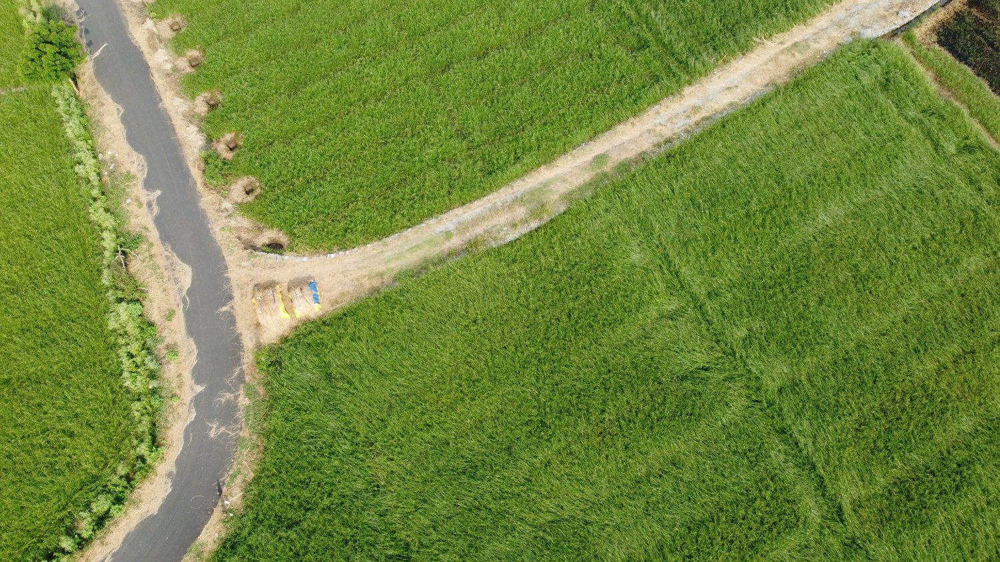

Carbon Project
Development
From site selection through VCS registration, we handle every stage of documentation, compliance, and third-party coordination — so partners can focus on outcomes, not paperwork.